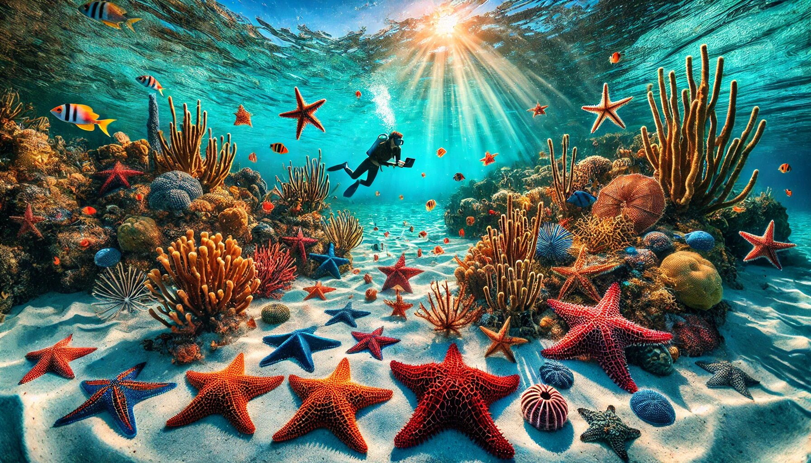

Florida’s coastal waters are a treasure trove of marine life, and among its most fascinating inhabitants are starfish, or sea stars. These captivating creatures come in all shapes, sizes, and colors, making them a delight for beachcombers, snorkelers, and marine enthusiasts. If you’ve ever wondered how to identify the starfish you spot along Florida’s shores, you’re in luck! This guide will introduce you to eight amazing sea stars you might encounter, along with a fun and easy-to-use app to help you identify them. Let’s dive in and explore the underwater world of Florida’s starfish!
Before we get into the nitty-gritty of Florida starfish identification, let’s take a moment to appreciate why starfish are so special. These creatures are not just pretty to look at—they play a vital role in maintaining the health of marine ecosystems. From controlling algae growth to serving as indicators of ocean health, starfish are true ocean superheroes. Plus, their unique shapes and vibrant colors make them a favorite subject for underwater photographers and curious beachgoers alike. If you’re exploring Florida’s coastlines, understanding Florida starfish identification can deepen your appreciation for these fascinating marine animals.
What Makes It Special: The Nine-Armed Sea Star is a true standout, thanks to its long, slender arms that give it a graceful, almost ethereal appearance. Unlike the typical five-armed starfish, this species boasts nine arms, making it a unique find for any marine enthusiast.
Where to Find It: This starfish prefers sandy or muddy bottoms, often hiding just beneath the surface. Look for it in shallow waters along Florida’s Gulf Coast.
Fun Fact: The Nine-Armed Sea Star is a speedy mover compared to other starfish, using its long arms to glide across the seafloor in search of food.
What Makes It Special: The Common Comet Star is a true gem of the ocean, with its vibrant blue or purple hue and smooth, rounded arms. It’s like the ocean’s version of a shooting star!
Where to Find It: This starfish is often found in coral reefs and rocky areas, making it a common sight for snorkelers and divers exploring Florida’s coastal waters.
Fun Fact: The Common Comet Star has an incredible ability to regenerate lost arms, making it a symbol of resilience in the marine world.
What Makes It Special: The Forbes Sea Star is a classic five-armed starfish with a rugged, textured surface. Its muted colors—ranging from brown to orange—make it a master of camouflage.
Where to Find It: This starfish is commonly found in tidal pools and along rocky shorelines, making it an easy spot for beachcombers.
Fun Fact: The Forbes Sea Star is a voracious predator, feeding on mollusks and other small marine creatures. It’s the ocean’s version of a cleanup crew!
What Makes It Special: The Gray Sea Star is a sleek and elegant species, with a grayish hue and a distinctive pattern of tiny spines along its arms. Its understated beauty makes it a favorite among marine biologists.
Where to Find It: This starfish prefers sandy or muddy habitats, often burying itself just below the surface. Look for it in shallow waters along Florida’s Atlantic Coast.
Fun Fact: The Gray Sea Star is a master of disguise, blending seamlessly into its surroundings to avoid predators.
What Makes It Special: The Red Cushion Starfish is a showstopper, with its bright red or orange color and plump, cushion-like appearance. It’s like the ocean’s version of a cozy throw pillow!
Where to Find It: This starfish is commonly found in seagrass beds and shallow reefs, making it a popular sight for snorkelers and divers.
Fun Fact: The Red Cushion Starfish is a slow mover but a powerful predator, feeding on sponges and other small marine organisms.
What Makes It Special: The Orange Ridged Sea Star is a vibrant beauty, with its bright orange color and distinctive ridges along its arms. It’s like a burst of sunshine on the ocean floor!
Where to Find It: This starfish is often found in coral reefs and rocky areas, making it a common sight for snorkelers and divers exploring Florida’s coastal waters.
Fun Fact: The Orange Ridged Sea Star is a favorite among underwater photographers, thanks to its striking color and photogenic appearance.
What Makes It Special: The Conical Spined Sea Star is a true marvel, with its spiny, conical projections covering its surface. Its unique texture and muted colors make it a fascinating find for marine enthusiasts.
Where to Find It: This starfish prefers rocky habitats and coral reefs, often hiding in crevices or under rocks.
Fun Fact: The Conical Spined Sea Star is a slow mover but a master of survival, using its spines to deter predators.
What Makes It Special: The Two-Spined Sea Star is a sleek and elegant species, with its smooth surface and distinctive two-spined arms. Its understated beauty makes it a favorite among marine biologists.
Where to Find It: This starfish is commonly found in sandy or muddy habitats, often burying itself just below the surface. Look for it in shallow waters along Florida’s Gulf Coast.
Fun Fact: The Two-Spined Sea Star is a speedy mover compared to other starfish, using its long arms to glide across the seafloor in search of food.
Now that you’ve met these eight amazing starfish, you might be wondering how to identify them in the wild. That’s where the Florida Starfish Identification App comes in! This user-friendly app is designed to help you identify starfish with just a few taps. Simply snap a photo of the starfish you’ve spotted, and the app will provide you with detailed information about its species, habitat, and fun facts.
While it’s exciting to spot starfish in the wild, it’s important to observe them responsibly. Here are a few tips to keep in mind:
Florida’s starfish are a true wonder of the ocean, each with its own unique charm and beauty. Whether you’re a seasoned marine enthusiast or a curious beachcomber, identifying these fascinating creatures is a rewarding experience. With the help of the Florida Starfish Identification App, you’ll be able to explore the underwater world with confidence and ease.
So grab your snorkel, download the app, and get ready to discover the stellar sea stars of Florida’s coastal waters. Happy starfish spotting!